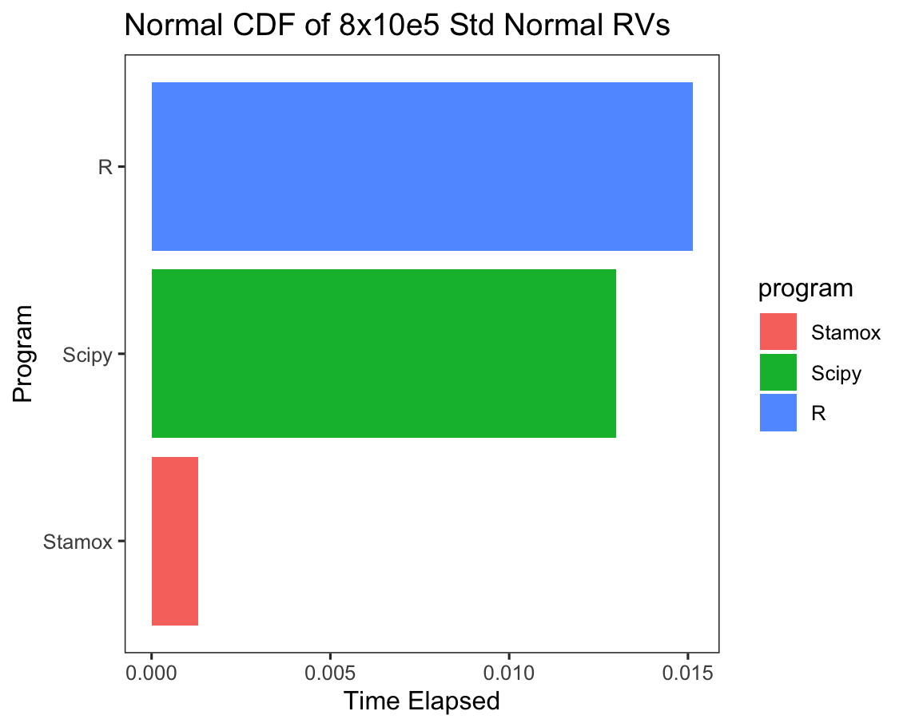

Hello Stamox¤
Make Your Statistics Reseatch Faster!


Why Another Wheel?¤
What stamox does is really simple, just make it possible, it aims to provide a statistic interface for JAX. But nowadays, we have so many statistic packages around the world varying from languages, for python, statsmodels just works great, for R, tidyverse derived packages are so delicate and easy to use. So why build another wheel?
Three reasons I think:
-
Personal interest, as a student of statistics, I want to learn more about statistics and machine learning, proficient knowledge comes from books but more from practice, write down the code behind the theory is a good way to learn.
-
Speed,
JAXis really fast, andEquinoxis a good tool to makeJAXmore convenient, backend ofJAXisXLA, which makes it possible to compile the code to GPU or TPU, and it is really fast. -
Easy of Use,
%>%is delicate operation inR, it combines the functions to a pipe and make the code more readable, andstamoxis inspired by it, and I want to take a try to make it convenient in python with>>.
Speed, at a glance¤
With jit and 'vmap' in JAX, it's easy to write a high performance program than vanilla numpy or R
Scipy¤
import scipy.stats as scp_stats
import numpy as np
x = np.random.uniform(size=(8, 100000))
%timeit scp_stats.norm().cdf(x)
Stamox¤
from stamox.distribution import pnorm, rnorm
import jax.numpy as jnp
import jax.random as jrandom
key = jrandom.PRNGKey(20010813)
x = rnorm(key, sample_shape=(8, 100000))
%timeit jax.block_until_ready(pnorm(x))
R¤
library(rbenchmark)
x = matrix(runif(8 * 100000), nrow = 8)
benchmark(pnorm(x), replications = 100)$elapsed / 100
And the mean elapsed time barplot is as follows:

Pipe, link with >>¤
Univariate Functions¤
For univariate functions, stamox provides a decorator make_pipe to make it pipeable, for example:
from stamox.core import make_pipe
@make_pipe
def f(x):
return x + 1
f(1) # 2
(f >> f >> f >> f)(1) # 5
Multi-variables Functions¤
For multi-variables functions, stamox provides a decorator make_partial_pipe to make it pipeable, for example:
from stamox.core import make_partial_pipe
@make_partial_pipe
def g(x, y):
return x + y
# Must use kwargs to define partial part
g(y=1)(1.) # 2.
h = g(y=1)
(h >> h >> h)(1.) # 4.
And make_partial_pipe can be used to make a function pipeable with make_pipe:
from stamox.core import make_pipe, make_partial_pipe
@make_pipe
def f(x):
return x + 1
@make_partial_pipe
def g(x, y):
return x * y
h = f >> g(y=2)
h(1) # 4
In fact, these functions decorated with make_pipe or make_partial_pipe doesn't really return a function class, instead, they will return a Functional class with __call__ method, so it can be used as a function, and it can be used as a pipeable function. And Functional class has a __rshift__ method, so it can be used as a pipeable function.
When we define h = f>>g, then h is a Pipe class, which also has a __call__ method, so it can be used as a function, and it can also be used as a pipeable function. And Pipe class has a __rshift__ method, so it can be used as a pipeable function.
But next, you may be confused with several conditions below:
from statox.core import make_partial_pipe
@make_partial_pipe
def g(x, y):
return x * y
g(1, 2) # 2
g(1, y=2) # 2
g(x=1, y=2) # Functional?
g(x=1)(2) # Error!
For first two are intended features for stamox, and last two conditions are compatible with functools.partial, for g(x=1, y=2), where we may expect a value 2, actually it's still a fucntion until we exectue it, so g(x=1, y=2)() returns 2 , which is similar to partial(g, x=1, y=1)(), and for g(x=1)(2), it's a error because python isn't smart enough to recogonize that " oh we have already get x, so 2 refers to y.", like partial(g, x=1)(2), which results in the same error, so you will need to use g(x=1, y=2)() or g(x=1)(y=1) instead.
So always recommend not to partial first arguments until we provide a more elegant partial wrapper :).
Compatibility with JAX and Equinox¤
Just compatible with jit, vmap, grad, pmap and so on, for example:
import jax.numpy as jnp
from stamox.core import make_pipe
from equinox import filter_jit, filter_vmap, filter_grad
@make_partial_pipe
@filter_jit
@filter_vmap
@filter_grad
def f(x, y):
return y * x ** 3
f(y=3.)(jnp.array([1., 2., 3.])) # [ 9. 36. 81.]
Next¤
You've already know everything about stamox, since it's based on JAX and Equinox, I recommend you to get a knowledge of JAX and Equinox first to know more about jit, vmap, grad etc.
For more apis, you can refer to Api section.